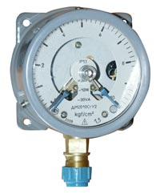

ДМ2010Сг, ДВ2010Сг, ДА2010Сг
Манометры, вакуумметры и мановакуумметры показывающие сигнализирующие ДМ2010Сг, ДВ2010Сг и ДА2010Сг предназначены для измерения избыточного и вакуумметрического давления различных сред и управления внешними электрическими цепями от сигнализирующего устройства прямого действия.
Манометры ДМ2010Сг выпускаются по ТУ 4212-040-00225590-2001
ВНИМАНИЕ! Для устранения влияния дребезга, подгорания и окисления на срабатывание сигнализирующего устройства приборы могут поставляться в комплектации с УРК. Для гашения гидравлического удара и пульсирующего давления - с демпферами.
Технические характеристики ДМ2010Сг
Диапазоны показаний приборов:
- ДМ2010Сг - от 0 до 1; 1,6; 2,5; 4; 6; 10; 16; 25; 40; 60; 100; 160; 250; 400; 600; 1000; 1600 кгс/см2
- ДВ2010Сг - от -1 до 0 кгс/см2
- ДА2010Сг - от -1 до 0,6; 1,5; 3; 5; 9; 15; 24 кгс/см2
По заказу манометры ДМ2010Сг поставляются в единицах измерения кПа, МПа
- Диаметр корпуса - 100 мм
- Класс точности приборов - 1,5 (по заказу - 1,0)
- Степень защиты - IP53
- Масса приборов - не более 1,0 кг
- Средний срок службы - 10 лет
Материалы деталей:
- корпус - сталь, алюминиевый сплав
- стекло - литое
- трубчатая пружина - медный сплав, железо-никелевый сплав
- держатель - медный сплав, сталь
- механизм - бронза, нержавеющая сталь, сталь 0,8 кп
Манометры ДМ2010Сг выдерживают воздействие вибрации в диапазоне частот от 5 до 35 Гц с амплитудой 0,35 мм (группа L1 по ГОСТ 12997-84)
Климатическое исполнение по ГОСТ 15150-69
- У2 - по умолчанию приборы имеют исполнение У2 (диапазон рабочих температур -50 до +60 °С)
- Т3 - по заказу приборы имеют исполнение Т3 (диапазон рабочих температур -50 до +60 °С)
Измеряемая среда - по умолчанию жидкость, пар, газ, в том числе пропан бутан; "кислород" - по заказу исполнение для измерения давления жидкого, газообразного кислорода. Резьба присоединительного штуцера - по умолчанию метрическая резьба М20х1,5-8g; G1/2-B - по заказу дюймовая резьба; R1/2 - по заказу коническая резьба
Для заказа манометров ДМ2010Сг звоните по телефону (495) 745-60-52.
Так же мы поставляем трехходовые краны 11Б18бк для присоединения манометров, манометры МП.